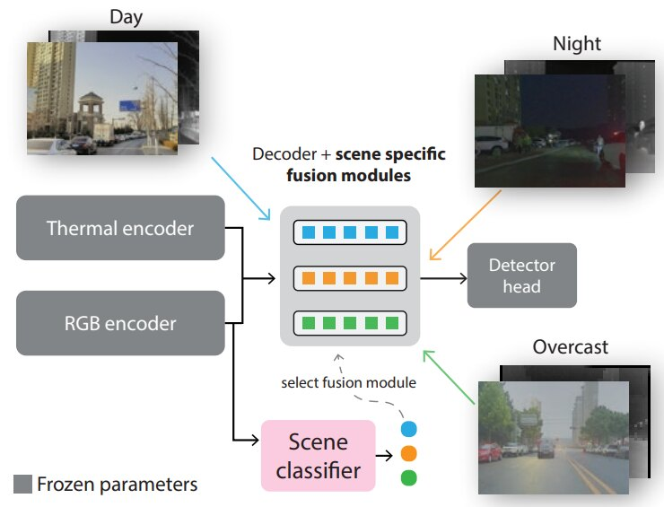
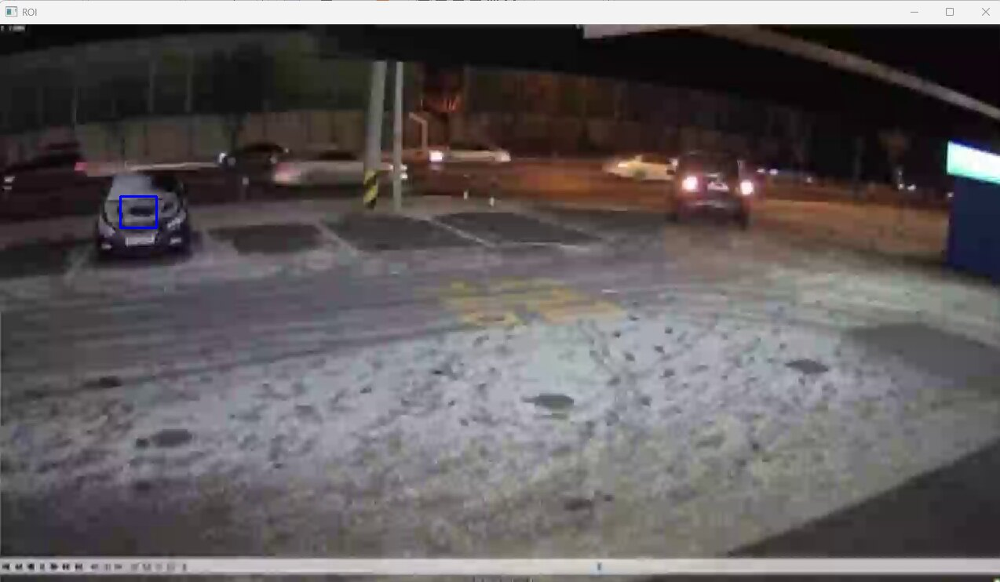
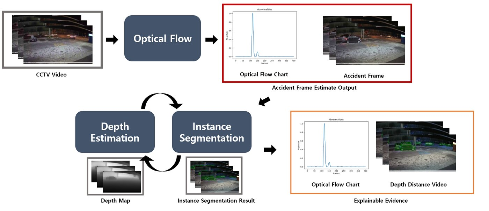
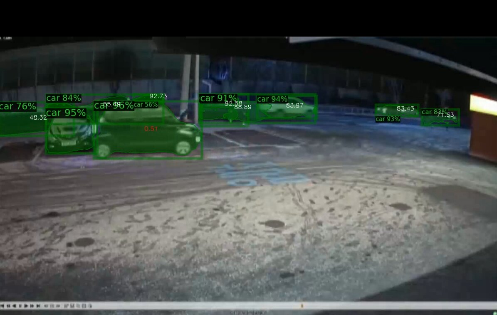

(폴리스랩2.0) 다중대역 영상처리, AI 영상인식 기술 기반으로 교통사고 감시 및 물피도주 분석 시스템 개발
가시광·근적외선·열화상 다중대역 영상과 레이더 정보를 융합하고, 광학 흐름(optical flow) 기반 차량 흔들림 분석으로 교통사고 및 물피도주(주차 후 도주) 상황을 자동으로 탐지하는 AI 영상인식 시스템.
Overview
비가시 환경(야간·안개·미세먼지·음영)에서는 교통사고와 범죄가 더 빈번하고 치명적이며, 효율적인 대응 또한 어렵다. 본 과제는 날씨와 주야간 등 주변 환경에 영향을 받지 않도록 가시광·근적외선·열화상의 다중대역 영상과 77GHz 밀리미터파 레이더 정보를 융합(퓨전 센싱)하고, AI 영상인식을 통해 차량·사람·동물·장애물을 구분하여 이동속도·위치·거리·좌표 정보를 확보하는 것을 목표로 한다.
각 센서는 서로 다른 정보 특성을 가진다. 카메라 비전은 컬러를 인지하지만 거리 측정이 불가능하고 광량·악천후에 취약하며, 열화상은 외부 광원 없이 암흑에서도 동작하지만 색 정보를 얻지 못하고, 레이더는 정밀한 거리·속도 정보를 제공하지만 평면적인 객체 유무 판단에 가깝다. 이들을 통합 영상·AI 정보처리 융합 알고리즘으로 크로스체킹하여 단점을 상호 보완하고, 이를 바탕으로 교통사고 감시와 물피도주의 예방·대응을 효율화한다. 과제는 과학치안진흥센터 폴리스랩2.0 사업의 일환으로, (주)미루시스템즈를 주관기관으로 한국과학기술원(KAIST)·국립한밭대학교가 공동연구기관으로 참여하였다.

Approach
- 가시광·근적외선·열화상 다중대역 영상 처리로 주야간, 안개, 비, 눈, 미세먼지, 음영지역 등에서도 가시성을 확보
- 다중대역 영상의 정합·블렌딩(퓨전)으로 거리별 정합 오차를 최소화하고 AI 인식률 향상
- 레이더(24/60/77GHz mmWave) 등 이종 전파 정보를 수용하는 개방형 멀티모달 구조로 거리·위치·속도 정보 확보
- AI 영상인식으로 차량·사람·동물·장애물을 구분하고 객체의 상태·행동패턴을 분석하여 이상행동·동선을 추적
- 물피도주 분석: 영상에서 피해 차량 영역을 ROI로 지정하고, 충돌 시점의 차량 흔들림(진동)을 광학 흐름(optical flow)으로 검출
- AI 분석 기능을 임베디드 형태로 내장하여 별도 분석 서버 없이 경제적으로 현장에 적용 가능하도록 설계


Methods & Tech
Results
물피도주 데모 알고리즘은 충돌 시점의 피해 차량 흔들림을 검출하여 출력 결과를 제시하는 형태로 구현되었으며, 적용 조건에 따른 성공·실패 케이스를 정리하였다.
- 성공 케이스: 고정된 카메라 View, 고해상도 영상, 명확한 충돌 시점, 그리고 영상으로 확인할 수 있을 정도로 피해 차량이 흔들리는 경우.
- 실패 케이스: 고정되지 않은 카메라 View(예: 핸드폰 촬영), 가려진 차량, 저해상도 영상, 차가 아닌 객체와의 물피도주, 정확하게 선택되지 않은 충돌 지점 ROI.
연구개발비 집행 측면에서는 2024년 기준 한국과학기술원 집행률 90.83%, 국립한밭대학교 집행률 86.11%로 보고되었다.
